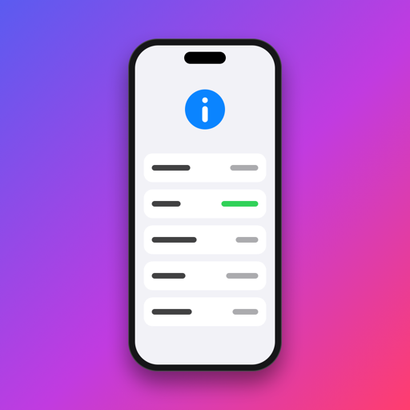
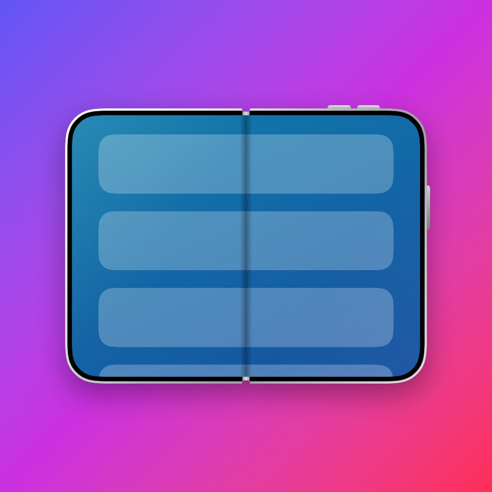
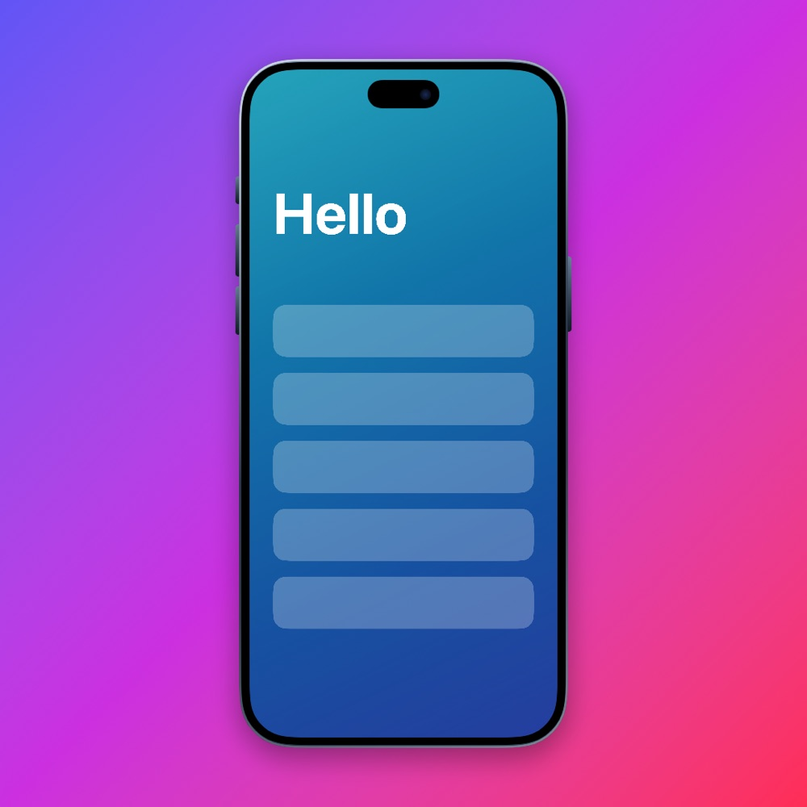
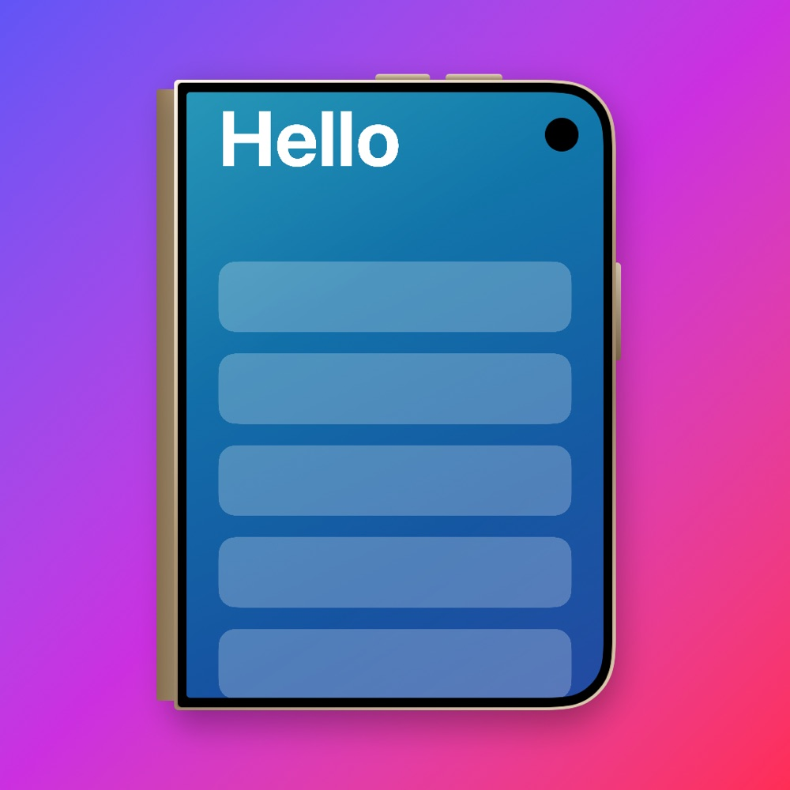
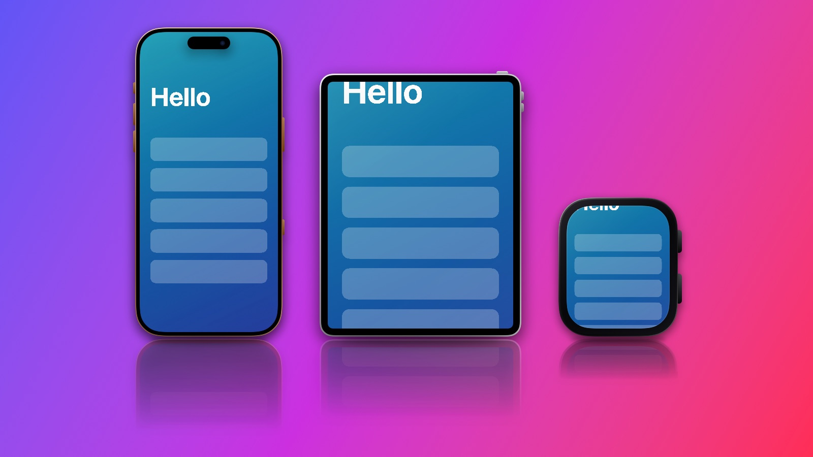
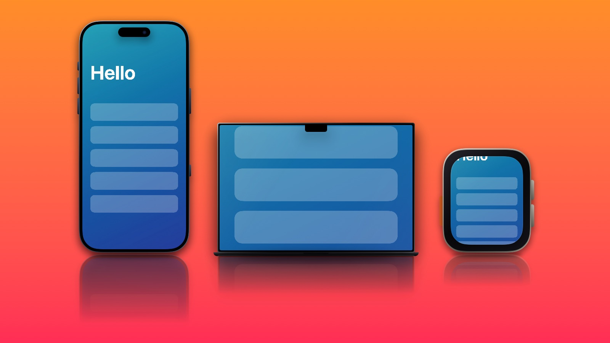
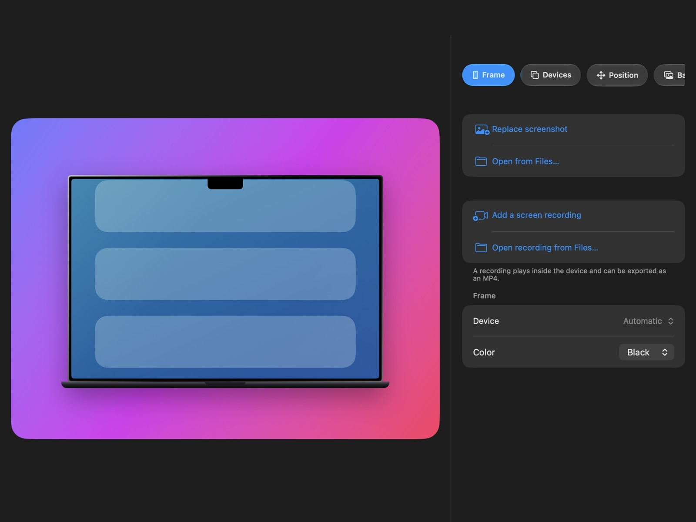
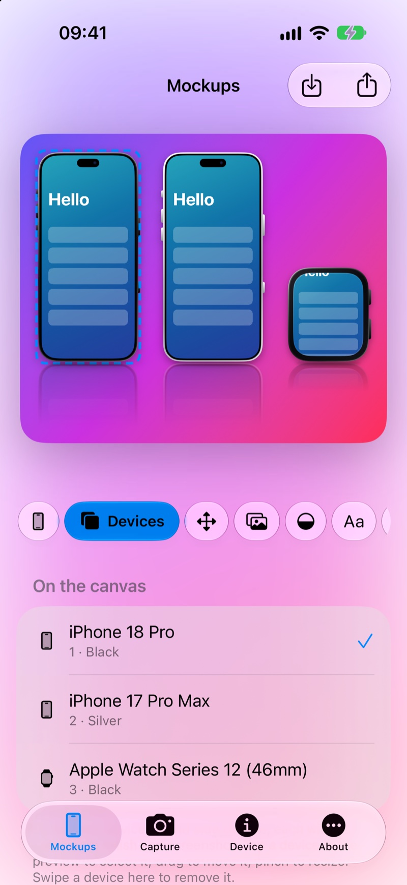
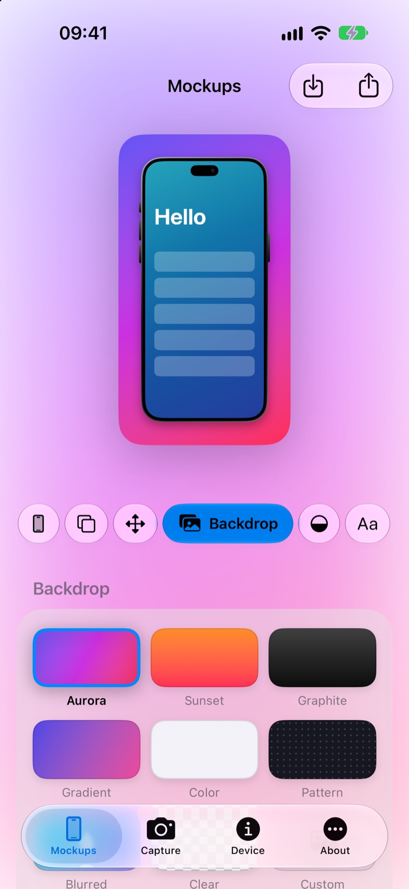
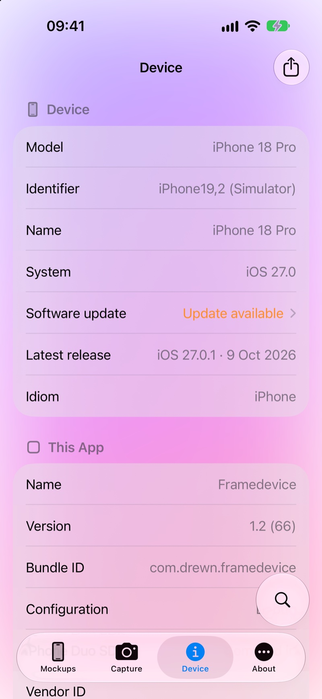

Framedevice
Mockups for screenshots and screen recordings – on iPhone, iPad and now Mac. Made for iPhone Duo.
In TestFlight beta · iPhone, iPad and Mac


Mockups made with Framedevice, using a sample screenshot.
Everything you need for a clean device shot
Pick a screenshot, choose a frame and a backdrop, and export it in the size you need.
Device mockups
Put any screenshot in a frame for iPhone 16, 17 and 18, iPhone Duo, iPad, Apple Watch or MacBook, portrait or landscape, in the finishes Apple sells.
Now on the Mac
A Mac app with the same frames, backdrops and video export, a menu bar and keyboard shortcuts, drag and drop, and save to a file you choose.
Several devices, one canvas
Stand an iPhone, an iPad, a Watch or a Mac side by side, each with its own frame, finish and screenshot. Made for App Store and website images.
Video in the frame
Add a screen recording to any device, watch it play in the preview, and export the whole mockup as an MP4 to share or save.
Made for iPhone Duo
Split layouts, fold and hinge awareness, frames for every posture, and a layout that follows the device as you open and close it.
Backdrops, shadows and sizes
Your own gradients, patterns or a blurred screenshot, a floor reflection and soft shadow, a headline, then export for Instagram, 1080p, YouTube, link previews and the App Store.
Everything about your device
Hardware, battery, display, network, sensors, cameras and more, plus whether your iOS is up to date. Search it, or export the whole report as a PDF.
Private by design
No accounts, no ads and no tracking. Your screenshots, recordings and device details stay on your device. Read the privacy policy.
New in 1.2
The biggest update so far, and Framedevice is now on the Mac.



- On the Mac. A Mac app with the Mockups and About tabs, a menu bar, keyboard shortcuts (press ⌘/ to see them), drag and drop, and Save As.
- Motion. Let the devices turn in, swing, zoom or rise and export the move as a video, with or without a screen recording.
- Callouts. Point at what matters with a ring, an arrow, a number or a label that you drag into place.
- Every size in one go. Pick the App Store sizes you need and export them all at once.
- Colors from your screenshot. One tap builds a backdrop from your screenshot’s own colors, worked out on your device.
- Text you can move. Add a headline and subtitle, then drag them anywhere on the canvas, even over the device. Choose alignment and a standard, rounded or serif style.
- Video in the frame. Add a screen recording to any device and export the whole mockup as an MP4.
- Several devices on one canvas. Up to three, each with its own frame, finish and screenshot, with a ready-made hero template.
- Apple Watch and Mac frames. Apple Watch Series 12 and Ultra 4, MacBook Pro 14 and 16 inch, MacBook Air 13 and 15 inch.
- iPhone 16, 17 and 18, and iPad. Every model, including 16e, 17e and iPhone Air.
- The finishes Apple sells. Each device offers its own colours, from Desert Titanium to Cosmic Orange and Night Sky.
- Floor reflection and contact shadow in the new Shadow tab.
- More backdrops. Your own gradients with an angle, patterns, or your screenshot enlarged and blurred.
- Hands-on. Drag, pinch and twist a device on the preview, save your favourite looks, and export as PNG or JPEG or copy the image.
A look inside
Shown on an iPhone 18 Pro simulator.



The details
What is in the app today.
Frames
- iPhone 16, 17 and 18 models, including 16e, 17e and iPhone Air, portrait and landscape
- iPad Pro, iPad Air, iPad and iPad mini, portrait and landscape
- Apple Watch Series 12 (46 and 42 mm) and Ultra 4
- MacBook Pro 14 and 16 inch, MacBook Air 13 and 15 inch
- iPhone Duo open and closed, portrait and landscape
- The finishes Apple sells for each device
- Picked automatically to match your device and posture, or pin the one you want
- Up to three devices on one canvas, each with its own frame, finish and screenshot
Backdrops and export
- Aurora, Sunset, Graphite, your own gradients with an angle, patterns, a blurred screenshot, transparent, or your own photo
- Floor reflection, contact shadow and full control of the shadow
- Move, resize, rotate, flip and tilt each device, by sliders or by touch
- Auto size, or Full HD, Story/Reel/TikTok, Instagram, YouTube, link preview, X post, and App Store sizes for iPhone, iPad, Mac and iPhone Duo
- Headline and subtitle, ready-made templates, and your own saved looks
- Export as PNG or JPEG, copy to the clipboard, save to Photos or share
- Screen recordings export as MP4, up to 60 seconds, without sound
On the Mac
- Same frames, finishes, backdrops, shadows and video export
- Open screenshots and recordings from files, or drop them on the window
- Save as PNG, JPEG or MP4 to a file, or to Photos
- Menu bar commands and keyboard shortcuts, with a shortcuts sheet
- Pinch, twist and drag a device on the trackpad
- No Device info tab on the Mac for now
Device info (iPhone and iPad)
- Model, system, display, battery, hardware and storage
- Network, sensors, cameras, accessibility and locale
- Fold and hinge status on iPhone Duo
- Tells you if a newer iOS is available for your model
- Search, and export as a PDF
Requirements
- iPhone or iPad with iOS 26 or later
- Mac with macOS 26 or later
- iPhone Duo features need iOS 27.1
- Currently available through TestFlight